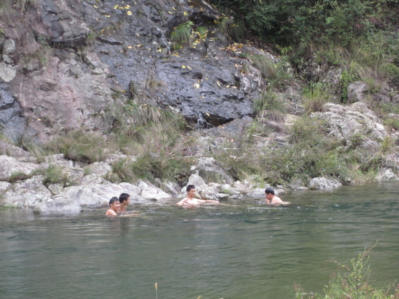
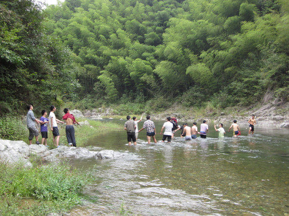

发信人: FireLeaf (落叶), 信区: outdoor
标 题: 浙东大峡谷之囧人囧行
发信站: 饮水思源 (2011年10月06日00:07:45 星期四)
浙东大峡谷之行第一弹——又爆胎了！童颜XX $迷路%恶狗
浙东 ~这应该是我第三次跟协会出去了吧~前两次说好回来要写点东西，但最后还是放
弃了。各种各样的借口，这次还是决定写一点记录下来这两天的点点滴滴。我感觉我如果
连这次都不写，等我老了躺在摇椅上给孙子讲故事的时候,肯定会后悔的~
还记得第一次跟协会出去，在去清凉峰的途中爆胎了，半夜在杭州折腾了好几个小时
，最后三点多到达营地。这次上车前，我还跟成翔组长开玩笑说这次应该不会再碰上爆胎
了吧。然后悲剧了……大巴都没出上海就爆胎了，拉开了本次浙东之囧行的序幕……
在等待司机师傅修车的时候，大家聚在一起聊天。那天夜空有颗星星很亮，我前前后
后盯了它半个多小时吧。应该是那时候大家开始熟悉的吧~跟几个女生聊着郎才女貌的那对
小情侣。然后就认识了童颜XX的会长大人，以及身边神秘的会长助理同学，还有一个不怎
么爱说话的小美女，不错哦~
车胎修好后，大家就开始昏昏欲睡了~带上眼罩，眯一会。十二点多，肚子饿了，但身
边就一瓶矿泉水别无他物。终于忍到了服务站，买了两块巴掌大的小饼和一小袋芝麻糖，
尼玛！坑了我二十多！忍了，谁叫咱肚子不争气呢！
之后下错了高速口，走错了山路。司机师傅开车开到了崩溃的边缘， 一辆破车就在这
七弯八拐的山路上摇摇欲坠。戴着眼罩，感觉就像腾云驾雾。最后司机停在了一个不知名
的小村子里面，下车找厕所，然后发现各个方向都是狗大哥的地盘，前有激流后又恶狗啊
！无奈上车蜷缩在座位上小憩一下吧，都四点多了~
浙东之行第二弹——：睡相，｛歌神｝雨衣大侠#博士*获奖感言￥%美食
记得第一天晚上，在车上和小洲同学有聊没聊的说了好多话。其实我应该不是个特别
爱说话的人吧，但也许是投缘，反正说了许多我现在一句都想不起来的话。到后来聊着聊
着就大家就都睡了，我们也就不好意思再说话了。两三点钟迷迷糊糊醒来一下，神奇地发
现发现小洲同学居然横着睡了，就差一脚把我踹下去了！小洲同学睡姿虽然不怎么样，睡
相还不错么，起码没流口水哦 回头环顾，发下大家的睡相囧异啊：有的眯着眼仰着头，有
的练少林铁头功顶在前座的，还有左摆过来右摆过去居然还没醒的……侧了侧身，我也继
续睡了。
没多久，迷路，掉头，停车，小憩……这段本来应该很简单的夜路就这样有惊无险的
过去了，我以为剩下的应该就是各种腐败了吧~没想到……
六点多，大家在歌神的一首“你是我的眼”的闹钟曲中惊坐醒。洗了把脸，然后有点
小郁闷的司机师傅终于把我们送到了正确的营地，吃早餐。在雨衣大侠神奇地拿出二十四
罐啤酒后，大侠神奇的传说就要开始了！
screen.width - 200){this.width = screen.width - 200}">
吃完早饭，拍了一个集体照，领队拿出那面很萌的会旗，我当时就泪崩了！咱协会也
太环保了！拍照，走人！一小段下山路后，接着就是上山。大约上了一半的时候，感觉女
生有点走不动的样子，无奈只好玩起了那个问问题猜名字的游戏（应该叫什么？有人知道
么？）转移了注意力后，明显感觉到她们没那么累的样子了。
然后似乎是在下山的过程中，我十分荣幸地获得了doctor的称号！用某苏的原话来讲
就是“ Doctor ：来自生科院，男，长相颇有博士相，能把真话说成真理，把假话说成真
话，故得此名。”
在这里我要感谢大家让我拿到这个称号，首先我要感谢我的父母生我养育了我，其次
我要感谢我的老师教育了我，我还要感谢我的朋友、粉粉丝们对我的支持，更要感谢CCTV
、MTV、TVB，给了我这个机会站在这个舞台上，最最感谢野协看上了我给了我这个机会，
让我用一个全新的角色出现在大家面前，还要重点感谢下黄同学，始终把最美的称号送给
了我，所以才有了今天成功的doctor，我十分感谢你们大家！
第二天上午其实还好，大家也不是很熟，走的也很快的样子，十点多就到了休息和吃
午饭的地方，下包！午饭时候，应该是第二天最放松的时候了吧！大家纷纷拿出各种美食
——泡面、火腿、面包、酱、紫菜蛋花汤、鸡蛋、牛肉干、炒面、叫化鸡、已经有点那个
的青菜、提子、柚子、苹果……以及会长大人的压缩饼干 （从这里可以看出我们这些业余
和专业之间的云泥之别了吧？）
screen.width - 200){this.width = screen.width - 200}">
screen.width - 200){this.width = screen.width - 200}">
浙东之行第三弹——涨水，淌水，横渡，落水……
吃过午饭！在 Garbage man 收拾完垃圾以后，我们开始了水路。精彩、刺激、低落、
感动都将从这里开始……
由于当地前几天下雨，水位涨了大约半米多，直接后果就是，本来及膝的水一下子到
了腰部以上，水急，深，冷。第一次泡到水里，又找回了溯溪的感觉，不过高兴之余又有
一丝担忧——水似乎有点大。越走水越深，领队只好带着大家走两旁的岩壁，o(︶︿︶)o
唉又是岩壁，岩壁神马的最讨厌了！长满了滑滑苔藓的石头，活蹦乱跳的青蛙（他们总说
是癞蛤蟆)，各种刺啊各种刺啊，尼玛一不留神就落水了，hold不住了！No fashion！
记得途中有段横淌过去的，我很傻的在水中小绕了一下，结果，尼玛，悲剧了！ 水都
到了胸脯以上了。我的包啊！后人啊，千万不要学我这样了！海拔有限就不要去做探路鬼
！下面就应该说说我们无敌的superman了！（某苏云：“Super man：来自电院的高同学，
男，才大一就如此super，游泳运动员出身的他，一路上神勇无比，探路、甘当人梯、水中
救人，吃起饭来用锅计量，俨然大家眼中的超人是也。”）
screen.width - 200){this.width = screen.width - 200}">
快到那个拉绳横渡地方的前面一段，有一处岩壁没有落脚点，水最浅也及我胸部。我
是基本上走在后面跟着压队。用某苏的话来叙述一下当时的情景吧：“superman就自己像
桩一样立在水中，让我们踩着他的肩过去，我因为走在前面，是第一个踩过去的，过去的
时候，我连连说，对不起对不起，他说，求生没有什么好丢人的，我听罢，内心真是百感
交集。感动很多，触动也很多，就这样一路下来，我们最终走到了一个没有路的关口。往
前走，无路可走，跨到对岸，水流湍急。”
当然我是不好意思踩在哥们儿肩上的，于是扑通一脚英勇的踏进了水里。o(∩_∩)o
哈哈
（在这里先说几句无关主题的话吧！速干衣裤就是给力啊！！我第二天基本上湿了干，干
了又湿五六次。很给力啊！继续……）
接着就是这次浙东之行最刺激和感动的地方了！我们来到了一个无路可走的地方！前
面是光滑的峭壁，没有落脚点；旁边是湍急的深水，对岸是高耸的岩壁！“在那个原始的
环境，部落的性质自然显现出来，男生们聚在一起商量对策。游泳运动员出身的superman
身先士卒去试水，发现水深且急，觉得情况不妙，一般的男生尚很难驾驭，别说这是个女
生了”。
screen.width - 200){this.width = screen.width - 200}">
第一套方案是拉锁运包，失败！
screen.width - 200){this.width = screen.width - 200}">
再借用某苏的话“总之，山里的寒风吹在我们身上湿漉漉的衣服上，一阵阵寒意，而
看着男生们赤着上身忙前忙后，领队愁眉不展，社长像山猴一样在旁边的山上爬上爬下观
察指挥，superman在湍急的水中游来游去，天气渐晚，前方情况未卜难料，而回去也几乎
不可能，看两边无声的大山，横亘在眼前的激流，大家都苦闷低落。”
反正是有点小郁闷，时间越来越晚，大家浑身湿透，站在那里风一吹凉飕飕的，热量消耗
地飞快。在会长大人爬上爬下半个小时后，最后我们决定用布绳过河的方法，男生下水站
成一排，先把包一个个运过去，然后女生再扶着男生的手臂过去。我就是那个拉绳子的，
开始一个人拉感觉好费力，体能也大部分消耗在这里了，直接导致后边体能不支啊，落水
两次有木有！。大约开始正式过河的时候有几个人过来帮忙拉绳子，这才感觉好多了。过
河时，水流特别急，人很难站稳，很多水瓶和一个防潮垫落水冲走，大家也没有去理会他
们。人安全过河就好！由于大家都没有心情去拍照了，这段珍贵的回忆也只能用这么拙劣
的文字来记录下来了。
横渡过河后马上又来了一次布绳过岩壁。万幸的是大家都有惊无险的过来了，稍做休
息，继续赶路，天马上就要黑了！
浙东之行第四弹—— 攀岩、爬岩、挂壁、掉壁……&*
收起绳子后，大家继续向营地挺进。不过明显感觉到，体力有点不支了，我个挫人啊
！摔倒落水的频率呈几何式上升，但是大家都没有抱怨神马的，只想着天黑前赶到营地，
天黑后的水路和峭壁是不敢想象的。未知，还是未知，不知道前方还有什么等着我们……
感觉是像走了千年，又或者一瞬，天空回眸一笑，河水轻叹一声，黯然，暗然。
途中我完成了我的处女摔，本想着就下水吧，被告知前方几步水已过顶，无奈，艰难
的抓着石缝爬上，心里发誓再也不背这么重的包了。路还得继续走，都说山里天黑的很快
，一路走在最后，不知道前面的人到了没有。看不到领队的影子，只是在努力的跟着队伍
的步伐。腿上划了七八道口子，泡在水里的感觉有点刺痛，但已麻木。
走到了一个突出来的峭壁上，看不到已过去的人，似乎隐约能看到对岸有人，还有到
了营地的喊声。在问了压队到营地里了么几次，都得到的是前方就是的肯定答案后，我送
了一口气。可是，接下来让我始料未及的是，我被挂在岩壁上了……这应该算是最难走的
一块岩壁了吧！凸，滑，下方水深，体力透支……各种原因综合起来导致了最后七八个人
过的十分龟速。我应该是包括压队倒数第三个人吧，一个着力点，一个着力点地摸索，走
了一半，然后就前方卡住了。前面有个女生趴在岩壁上走不了了，似乎哭了，带着哭腔和
下面接应的superman交流。无奈还是不动，我们最后三个人只好挂在岩壁上了，进退维谷
啊！
果然，山里的天黑的神速啊！稍微夸张一点说，你可以看着你的手从有形变到无影。
背着重包，扣着岩缝，我体力在飞快的耗散。最糟糕的是，右臂和左腿的肌肉开始打颤，
已经基本上没有了力气。安静地等在那里，话也不说，节省最后一点体力吧！终于大无畏
的superman把她抱了下去，缓慢地移动吧。
发现，天黑后，青蛙特别活跃，就在我脑袋上面跳啊跳啊。一下跳下来，感觉像是跳
进了我衣服里面去了，还好最后下来证明只是感觉。最后几步了，下面的人用头灯和手电
照着下一个落脚点，脚一点一点地伸下去摸索，肌肉颤抖不止，无奈能好采取人包分过的
办法。卸下包后相对轻松了许多，小心地滑下，终于踩到了一块能完全着力的地面上了！
打开背包顶部，取出头灯，为最后的兄弟照亮落脚点。
回头发现河对岸有人在用手电照着，等着我们。忽然有种莫名的感动，没有被抛弃，
像是亲人在等着你回家，又或战友等着你归队，你不是一个人在，还有许多人关心着你。
穿过这段急流就到了，水速很快，大家后人对着前人排着队走，集体的力量渗透在前进的
每一步。拉着上面人的手，我打上了对岸的石头，营地，到了！
上岸后，最高兴的发现小洲同学在等着我们最后两三个人，好感动的说，心情也一下子变
好了！也许你不知道，我盯着你傻笑了一阵子，然后回头看看superman，压队荣同学，会
长，组长，哈哈哈……
浙东之行第五弹——姜汤，排骨，叫花鸡……#￥篝火，聊天，小情侣#￥%……&
开着头灯来到了营地，大家已经都搭好了帐篷，最后到的人伤不起啊！
screen.width - 200){this.width = screen.width - 200}">
帮小组煮姜汤的鲁同学点着炉头后，我一个人搭起了帐篷。鲁同学还是很靠谱的，是
不是？@XXX，o(∩_∩)o （忘了说了，小鲁同学居然跟我是老乡啊！十中的孩子，很有十
中的范儿哈！）喝完放了大半包果珍的姜汤后，我们终于开始做晚饭啦！红烧排骨有木有
！叫花鸡有木有！排骨的骨头居然是酥的，一咬就碎，哈哈！没有辜负我从上海一路背它
过来！！！可惜天气不冷，我拿的白酒就和小洲同学喝了两口，不过红烧排骨面可吃了不
少！叫花鸡似乎晚上没吃？不记得了呃。。。不过中午吃第一只叫花鸡时，小洲同学黄黄
的手指让我记忆犹新啊！
酒足饭饱后，大家围在篝火旁边后放松心情聊天。没有了白天急忙的赶路，也没有了
落水后的沮丧；没有了无路可走时候低落，也没有了挂在岩壁上的担忧。有的只是激情后
的安详，什么都不想，看着篝火的火苗跳动，心也跟着舞动~
随着人数的增加，大家两三个开始了聊天。黄同学发起的各种绰号开始了汇总与传播
。一夜之间，doctor，garbage man, super man, 雨衣大侠，盛传营地中。黑暗中，虽然
看不清脸，但是能感觉得到每个人都笑容满面，一天的彼此帮助与加油拉近了我们之间的
距离，野协真是一个好地方啊！
screen.width - 200){this.width = screen.width - 200}">
神奇地发现，我们组的一对大一小同学居然一直在聊天，聊啊聊啊。只要我能看见他
俩就在不停地聊，o(∩_∩)o 哈哈私下我们称呼你们小情侣~祝愿此话成真吧！学长学姐们
老了，还是年轻点好啊！
大约十点半左右，随着最后一把柴的燃尽，篝火聊天会也接近了尾声。用水浇灭篝火
后，检查没有了火星，大家回到各自帐篷里面，倒头，睡觉！！
screen.width - 200){this.width = screen.width - 200}">
浙东之行，尾声——涨水啦！神奇的大妈#%熟练活儿~腐败大餐&体能推车训练&可爱的
庙门
迷迷糊糊醒来，肩膀凉飕飕的，昨晚太热睡袋没拉的后果显露无遗。然后没多久，就
听见一声“还有活人吗？”脑袋嗡的一声，发生什么了？紧接着又有“涨水啦！”传来，
赶紧爬起来，拉开帐篷探头观望。尼玛，原来是superman醒来无聊，骗大家玩==！最后，
领队很无奈的叫大家起床，一看表5：45.
穿好衣服，去河边洗了把脸，然后煮上水，回去收拾东西。简单而足量的早饭过后，
一位抄着一口我们谁都听不懂的宁波话大妈神奇地传送到了营地，莫名其妙地收费！（昨
晚没有任何通知，旁边有没有收费的告示，）然后就是大家欢乐地反击，garbage man上演
自杀式威胁,巴同学底气十足的呵斥，领队镇定的“阿姨我们能不能不发生冲突”，大家风
格迥异的反击给这个平淡无奇的早上添了无穷的欢乐。
screen.width - 200){this.width = screen.width - 200}">
翻过一个小山头，我们再次遇到了横流，再投票放弃溯溪而上的线路后，大家决定休
息后再次横渡。急流下游是一个拐口，形成了一个很漂亮的潭，碧水清澈，几个男生纷纷
下水游泳，旱鸭子的我知道坐在岸边打水漂了。
 screen.width - 200){this.width = screen.width - 200}">
休整过后，大家轻车熟路地再次布绳过河。没有了前一天的焦急，大家熟练地脱下外
套，架人墙，女生很配合地递包，会长大人甚至还要求拍一段教学视频给后人观摩，嬉笑
怒骂中轻松搞定！
 screen.width - 200){this.width = screen.width - 200}">
不到一个小时的上山路，我们来到了农家，腐败开始啦！群山中中，我们尽情地吃，
尽情地喝。雨衣大侠无敌地酒量让人望而生畏，一次一瓶，把领导们吓坏了。压队酒后对
会长大人露真情，直接变身成了远妹，o(∩_∩)o 哈哈。饕餮大餐后，大家拍照留念！
screen.width - 200){this.width = screen.width - 200}">
本以为腐败过后就应该给这次精彩刺激的浙东之行画上句号，居然……车子依旧在考
验我们的体力，用“苟延残喘”四个字来形容这辆可怜的大巴简直太合适了，一路上走走
停停，熄火我们就得下去推车，大约推了七八次的样子，他终于在宁海休息区罢工了。然
后就是漫长的等待，反正七天假期才刚刚开始，大家也不急，三国杀、斗地主、聊天打屁
……各显神通。最后歌神还一展歌喉，一曲“暗香”征服了无数路人的心啊！
不到两点从农家出发，和小洲同学讨论着大一小朋友旺盛的聊天精力，然后迷迷糊糊
，一直到十一点才回到可爱的庙门。
--
※ 来源:·饮水思源 bbs.sjtu.edu.cn·[FROM: 59.78.41.8]
|